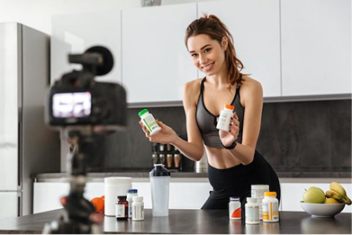

The project, at a glance.
UX Case Study
18–25
Independent website
& developer
HTML / CSS / JS
Case study · Evaluation plan
The feed feels personal. The training stays invisible.
Short-video feeds often feel personal and self-directed, but every like, skip, watch, and save becomes a signal. Over time, repeated exposure to influencer and product-related content can shape attention, preference, and purchasing behavior before users fully notice the pattern.
How might we help college students recognize how their short-video behaviors train recommendation algorithms and influence consumer decisions?

An algorithm learners can feel changing.
Train the Feed is a simulated short-video feed. Learners react to content, complete a short session, and then see how their actions shifted the recommendations they received.
View Prototype ↗From invisible system to visible learning.
Mapped the algorithm-awareness and consumer-influence problem.
Synthesized student habits, needs, and awareness gaps.
Translated findings into goals and objectives.
Designed the feed logic and reflection flow.
Built the responsive prototype and case study site.
Planned usability and learning evaluation.